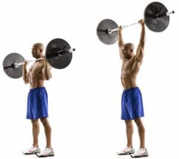

Nascimento is an ambitious young man with a large focus on self-improvement and discovery. His favorite topics include women, health and fitness, and masculinity. Check out his blog: Power Your Twenties. He is also on Twitter.


When it comes to deciding what is the best weight training exercise, there is much to discuss. There’s the squat and the deadlift. There are the explosive, combination movements such as the clean and press. These are excellent exercises that should have a place in every workout regimen. However, if we are to place a focus on upper body dominant movements, there is a clear and distinct king of exercises:
The barbell shoulder press (or military press).
The shoulder press is the best upper body movement. There are great arguments that suggest the bench press, or perhaps weighted pull-ups are in fact the best exercises. Although they are great compound exercises on their own that focus and develop large muscle groups, they simply cannot compete with the overhead press, in terms of variety and extent of active muscle groups and potential for development. When asked what muscles are worked during the press, most will answer with the deltoids, triceps, and maybe the upper chest. These are all true, except this is only a small portion of the workload.
Let us examine this movement more closely. A firm overhand grip is used, with hands roughly shoulder width apart, holding the bar just above the clavicles. The bar is then pushed up in a straight line by extending the elbows, until full extension is reached and the bar is stabilized above your head, completing the repetition.

Now where things get interesting, the skeletal-muscular breakdown. The initial part of pressing the bar up involves the abduction of the gleno-humeral (GH) joint, until your upper arm is about parallel to the ground. From that point to the full extension of the elbows, there will be adduction of the GH joint as the arms are brought back towards the midline of the body. Throughout the entire movement, the GH joint is externally rotated, and the scapula will drive the GH joint movement by superiorly rotating as the arms are extended above the head.
To sum up the movements, we have abduction, adduction, and external rotation of the GH joint; extension of the elbow; and superior rotation of the scapula.
Now, the muscles that produce those movements:

Were you aware this much muscle was involved in your shoulder press?
Although some muscles I listed are considered more prime movers than others, they are all either large muscle groups or significant movers. Anconeus for instance, is an elbow extensor, but is such a small muscle that I didn’t bother to list it here.
Shoulder pressing will not only develop those round shoulder caps and dense upper chest muscles, but will also develop a significant portion of your posterior. A v-shaped back is a result of well-developed lats, traps, and scapular muscles that can all be stressed during the shoulder press.
You will also be developing essential core muscles. Power comes from your core — by shoulder pressing you will activate the abdominal and erector spinae groups extensively. Their function is to stabilize, without a stable core your body would simply fold as you attempt to press the bar over your head. Also, consider that you will also be working the serratus anterior muscles, or more commonly referred to as the boxer’s muscle. Not only are they a powerful muscle group outlining the exterior of the ribs, they are also aesthetically pleasing when developed as well:

Evidently, the shoulder press is a very efficient exercise for developing the musculature of the upper body. It targets multiple large muscle groups, and some smaller, harder to work groups, due to it’s extensive range of motion. The shoulder press should be considered part of the core and foundation of any serious workout program.
Don’t be surprised if you start to enjoy it more than the bench press.
Read More: 3 Ab Exercises Every Man Must Know